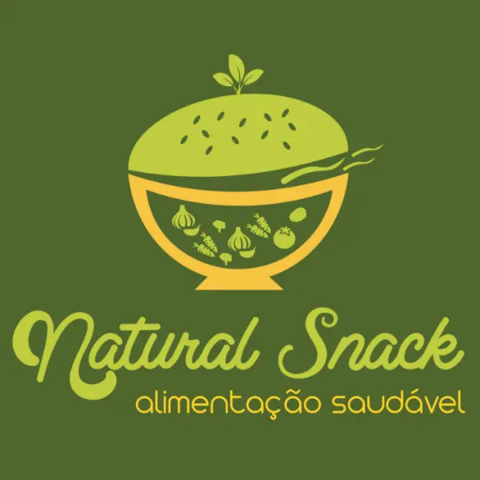
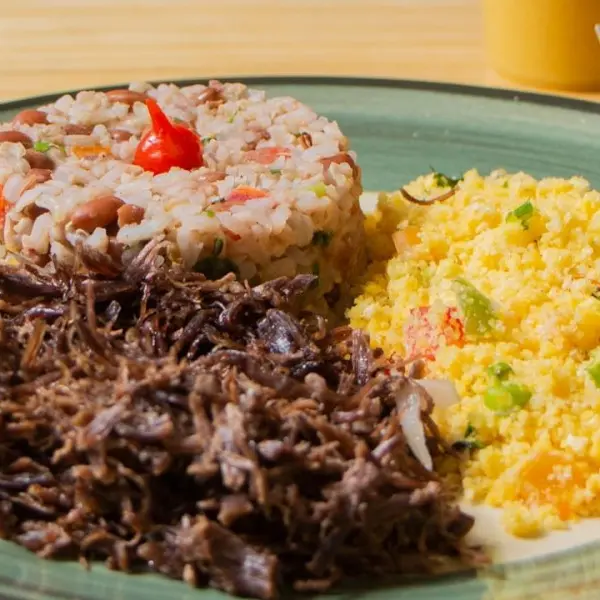
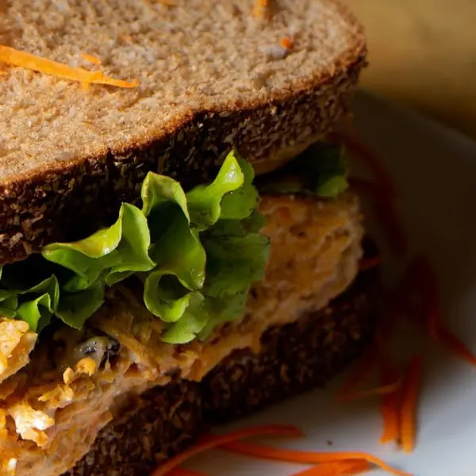
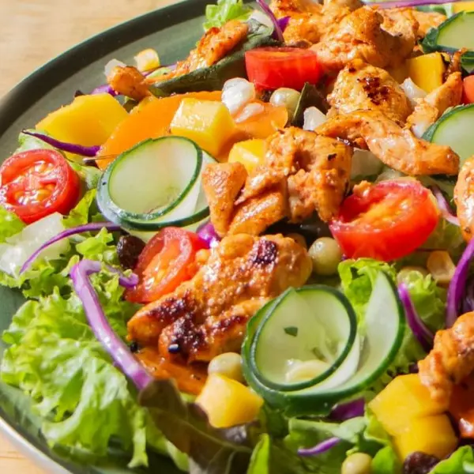
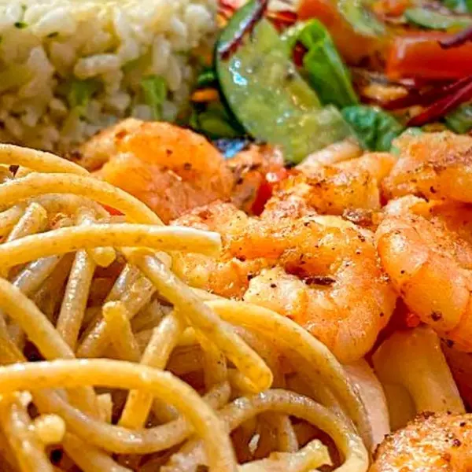
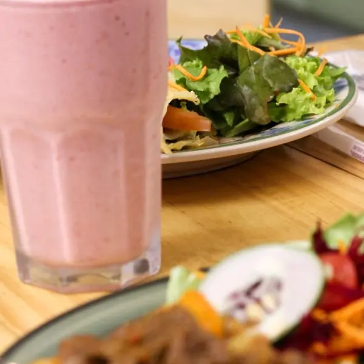
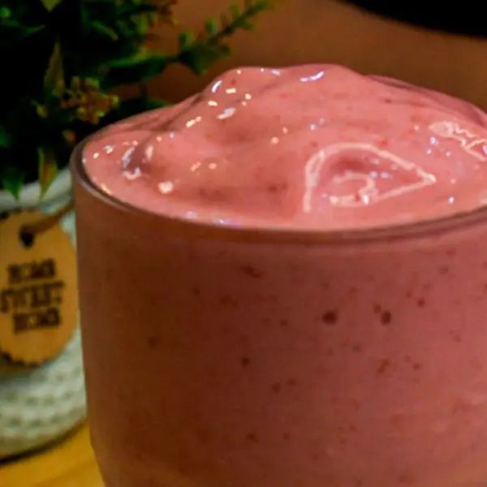

Frango com ricota
Frango, ricota, requeijão, queijo coalho, milho, passas, folhas, tomate e cenoura.

Ligar para a NaturalNatural Snack · Sobral
Uma refeição, um lanche ou uma bebida para acompanhar o dia. Conheça as nossas escolhas e encontre a sua no cardápio.
Escolher no cardápio
Comida de verdade, na mesa da Natural Snack.
Vai de quê hoje?
Nosso menu reúne refeições, snacks, saladas, massas, sopas, crepiocas e bebidas. Veja as opções disponíveis e escolha pelos ingredientes.

Na hora do almoço
Na categoria “monte seu almoço”, escolha as proteínas e os acompanhamentos disponíveis no cardápio.
Consulte as combinações, os valores e as condições do pedido na plataforma.
Ver opções de almoçoO lanche também tem escolha

Folhas, massas e ingredientes

Explore as saladas do nosso cardápio e escolha a sua pelos ingredientes. Se tiver uma dúvida ou restrição alimentar, consulte a equipe antes de pedir.

Temos spaguetti de camarão entre as opções do menu. Na categoria de massas, você encontra espaguete integral ou de abobrinha, com finalização de queijo ralado e ervas finas.
Conheça as opções atuais no cardápio. As fotos mostram pratos preparados pela casa.


Para acompanhar ou fazer uma pausa
No cardápio, você encontra sucos tradicionais, combinados e smoothies. Escolha a bebida que acompanha a sua pausa.
Escolher uma bebidaNatural Snack · Sobral
Consulte o cardápio no aiqfome ou ligue para falar com a gente. Para visitar, confirme a localização com a equipe.
No nosso cardápio do aiqfome. Lá você consulta os itens, os valores e as condições do pedido.
Sim. A categoria “monte seu almoço” permite escolher entre as proteínas e os acompanhamentos disponíveis no menu.
Sim. Snacks, hambúrgueres e crepiocas estão entre as categorias do nosso menu.
Veja a descrição no cardápio. Se tiver uma dúvida ou restrição alimentar, fale com a equipe antes de confirmar o pedido.